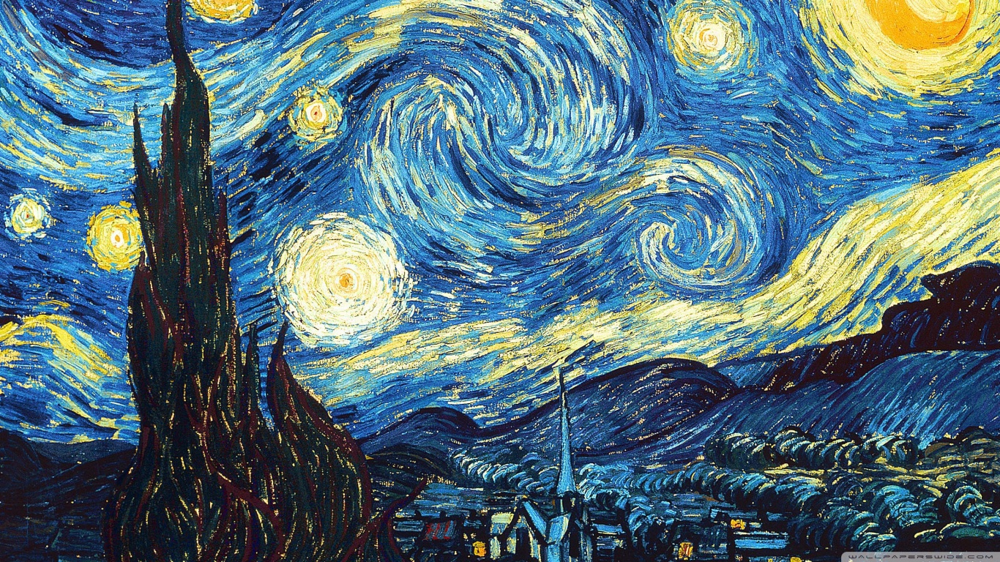

I'm computer engineering student at Ankara Unversity. I like to learn new things
I like frogs
If you want to search internet theres a link for ya
GOOGLEThis is a image that i liek
OH it'S dat boi again

TAHİRLE ZÜHRE MESELESİ Tahir olmak da ayıp değil Zühre olmak da hattâ sevda yüzünden ölmek de ayıp değil, bütün iş Tahirle Zühre olabilmekte yani yürekte. Meselâ bir barikatta dövüşerek meselâ kuzey kutbunu keşfe giderken meselâ denerken damarlarında bir serumu ölmek ayıp olur mu? Tahir olmak da ayıp değil Zühre olmak da hattâ sevda yüzünden ölmek de ayıp değil. Seversin dünyayı doludizgin ama o bunun farkında değildir ayrılmak istemezsin dünyadan ama o senden ayrılacak yani sen elmayı seviyorsun diye elmanın da seni sevmesi şart mı? Yani Tahiri Zühre sevmeseydi artık yahut hiç sevmeseydi Tahir ne kaybederdi Tahirliğinden? Tahir olmak da ayıp değil Zühre olmak da hattâ sevda yüzünden ölmek de ayıp değil. Nazım Hikmet Ran
My full name is Bengünur
A song that i likeKing Lear act 3 Scene4 page 2
Poor naked wretches, whereso'er you are,
That bide the pelting of this pitiless storm,
How shall your houseless heads and unfed sides,
Your looped and windowed raggedness, defend you
From seasons such as these? Oh, I have ta'en
Too little care of this! Take physic, pomp.
Expose thyself to feel what wretches feel,
That thou mayst shake the superflux to them
And show the heavens more just.
Quote from 'Accross the Universe' book
A week ago, I would have snorted at those words.
Love was no more real than the “god” Amy worshipped.
I’d heard of “love” in the same context that
I heard of those religious fairy tales—as stories
Sol-Earth people used to tell to make themselves feel
better about the imperfect world they helped to create.
But now...
All rights reserved byBNG corp

Starry Nightby Van Gogh painted in 1889